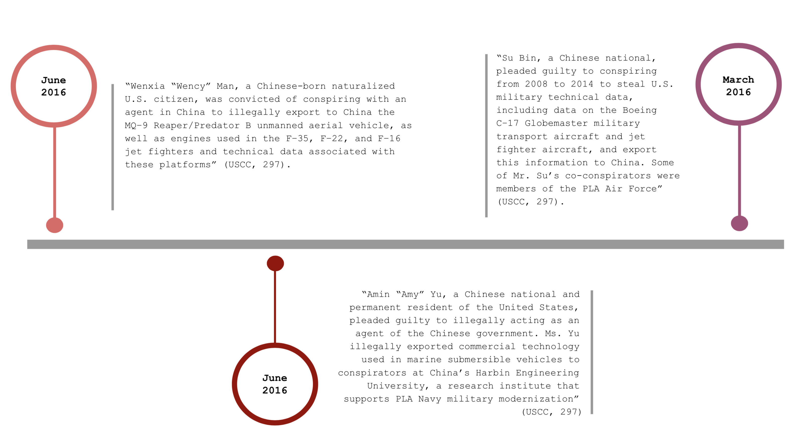

Counterintelligence and Foreign Denial and Deception
PART THREE | A Visualization of China’s Use of Soft Power Around the World
China's use of soft power poses a threat to United States foreign policy interests around the world. In 2018 the U.S. Intelligence Community identified China as a potential threat to the United States in their Worldwide Threat Assessment.
Counterintelligence and Foreign Denical and Deception: "The United States will face a complex global foreign intelligence threat environment in 2018. We assess that the leading state intelligence threats to US interests will continue to be Russia and China, based on their services' capbilities, intent, and broad operational scope" ( Director of National Intelligence, 2018, p. 11).
Outlined in the ODNI's Counterintelligence and Foreign Denial and Deception are two major areas of concern:
1. "Targeting of national security information and proprietary information from U.S. companies and research institutions involved with defense, energy, finance, dual-use technology” (Director of National Intelligence, 2018, p. 11)
2. “Trusted insiders who disclose sensitive or classified U.S. Government information without authorization will remain a significant threat in 2018 and beyond” (Director of National Intelligence, 2018, p. 11)
The targeting of national security and proprietary information is addressed in Part Six Technology Acquisitions and Strategic Economic Competition where the section identifies sensitive areas of U.S. technology and research. For Part Three, we investigate China’s counterintelligence service’s capabilities, intent, and broad operational scope by identifying Chinese intelligence collection operations against U.S. national security entities.
To understand the complexities of China’s counterintelligence capabilities, we gathered our information from the 2016 U.S.-China Economic and Security Review Commission (USCC), Chapter 2, Section 3 report on the Chinese Intelligence Services and Espionage Threats to the United States. The article defined China’s Intelligence Services, China’s Intelligence Collection Capabilities, and the Implications for US National Security. Highlighted chapters of the 2019 Report to Congress include U.S.-China Competitions and China's Global Ambitions with their sections listed below:
U.S.-China Competition
Chapter 3 Section 1- U.S.-China Commercial Relations
Chapter 3 Section 2- Emerging Technologies and Military-Civil Fusion - Artificial Intelligence, New Materials, and New Energy
Chapter 3 Section 3- Growing U.S. Reliance on China's Biotech and Pharmaceutical Products
China’s Global Ambitions
Chapter 4 Section 1- Beijing's "World-Class" Military Goal
Chapter 4 Section 2- An Uneasy Entente- China-Russia Relations in a New Era of Strategic Competition with the United States
Chapter 4 Section 3- China's Ambitions in Space - Contesting the Final Frontier
Chapter 4 Section 4- Changing Regional Dynamics - Oceania and Singapore
There are four major branches of the Chinese intelligence services: the Ministry of State Security, PLA Intelligence, PLA Intelligence Strategic Support Force and the CCP United Front Work Department. Each branch has a unique role. The CCP United Front Work Department “under the CCP Central Planning Committee is responsible for, among other things, building and managing relationships with actors overseas to expand China’s soft power and future the CCP’s political agenda” (USCC, 2016, p. 291). The PLA Intelligence departments were reorganized after Chinese President and General Secretary of the CCP, Xi Jinping made an announcement in January 2016. The Strategic Support Force, part of the PLA Intelligence “will consist of cyber forces 'focusing on attack and defense,’ space forces ‘focus[ing] on reconnaissance and navigation satellites’, and electronic warfare forces focusing on ‘jamming and disrupting enemy radar and communication’ according to a former RLA Second Artillery Force Officer” (USCC, 2016, p. 291). The Ministry of State Security is an equivalent organization to the U.S. Central Intelligence Agency and the U.S. Federal Bureau of Investigation. A new “theatre command structure” was announced by President Xi Jinping in February 2016 that will create “greater jointness and integration of the intelligence collected by various military services to inform military decision makers” (USCC, 2016, p. 291). The restructuring of the Chinese counterintelligence agencies appears to be an effort to strengthen the country’s ability to conduct foreign denial and deception and counterintelligence operations around the globe.

The CCP United Front Work Department’s mission is to “co-opt and neutralize sources of potential opposition to the policies of its ruling Chinese Communist Party” (Bowe, 2018, pg. 3) with a focus on foreign influence operations. The USCC published a report in August 2018 on China’s Overseas United Front Work (Background and Implications for the United States) which details United Front Activities including the funding of U.S. academic policy discourse; political interference in Australia and New Zealand; and political warfare in Taiwan. Political donations and media investment from United Front Work Department affiliates have helped elect PLA affiliates since the mid-2000s and in Taiwan information warfare is being used to “suppress independence movements, undermine Taiwan’s government, and recruit [favorable Taiwan] politicians” (Bowe, 2018, pg. 18). As of October 2019, there are 84 Confucius Institutes in the United States with 81 located at American colleges (National Association of Scholars). In 2018 there were 54 Confucius Institutes in Africa according to the Hanban Chinese Language Council. “Confucius Institutes are CCP-sponsored education organizations that teach Chinese language, culture, and history at the primary, secondary, and university level around the world” (Bowe, 2018, pg. 12) — and are funded by the CCP Propaganda Department. Unlike in the United States where there is heavy academic criticism of Confucius Institutes, in Africa, because the distribution of Confucius Classrooms is uneven they are not controversial — Confucius Institutes are welcomed for they bring educational opportunities to local communities. Recent United States tensions with the Chinese has prompted 24 Confucius Institutes between 2018 and 2019 to close. Although Confucius Institutes offer a glimpse into the Chinese language, culture and history — it is vital to remember that they are sponsored by a Chinese intelligence branch and funded by the CCP propaganda department.
China's Intelligence Collection Operations agaisnt U.S. National Security Entities
For the following five categories we created a timeline depicting major Chinese intelligence collection opertions against the United States. The data is sourced from the U.S.-China Economic and Security Review Commission and are examples of "Chinese infiltrations and alleged infiltrations of a wide range of U.S. national security entities" (USCC, 294).
U.S. MILITARY FORCES
U.S. DEFENSE INDUSTRIAL ENTITIES
NATIONAL SECURITY DECISION MAKERS AND GOVERNMENT ORGANIZATIONS
U.S. CRITICAL INFRASTRUCTURE
U.S. ALLIES AND PARTNERS
China’s intelligence collection operations against U.S. national security entities are occurring in the following sectors: U.S. military forces, U.S. defense industrial entities, national security decision makers and government organizations, U.S. critical infrastructure, and U.S. allies and partners. Many of the incidents reported in the Chinese Intelligence Services and Espionage Threats to the United States targeted “trusted insiders who disclose[d] sensitive or classified US Government information without authorization” (Director of National Intelligence, 2018, pg. 11). Many of these trusted insiders, worked in the following national security sectors and were either Chinese-born naturalized U.S. citizens or permanent residents. Identifying individuals at risk for sharing sensitive or classified US government information is vital to national security.